Executive summary

- Central location: Fast access to Downtown, Hayes Valley, Nob Hill, Japantown, SOMA, and northern neighborhoods.
- Transit-led positioning: Van Ness Bus Rapid Transit (BRT) materially improved corridor mobility, reliability, and safety.
- Residential precedent: Nearby product like 100 Van Ness, 150 Van Ness, and Opera Plaza proves the corridor already works for housing.
- Institutional anchors: Healthcare, education, and civic uses support steady daily demand.
- Redevelopment story: The site reads as a legacy auto use in a corridor increasingly aligned with residential and mixed-use redevelopment.
Property positioning
Public references identify 950 Van Ness as a former Mercedes-Benz / auto-oriented property on the Van Ness corridor. That matters because the site reads like a leftover auto use in a corridor that now makes more sense as a residential and mixed-use address.
Current read
- Automotive / dealership identity on a high-visibility corner.
- Legacy low-intensity use on a major urban corridor.
- RC-4 zoning already anticipates high-density residential mixed with active ground floors.
Redevelopment logic
- Two-story, 44,000-SF structure on 0.37 acres presents an immediate intensity gap versus neighboring multifamily product.
- Owner-user (Academy of Art University) control means no multi-tenant lease-down is required before construction.
- Corner frontage on Van Ness, O’Farrell, and Olive delivers 300+ feet of exposure for future residential or mixed-use podium programming.


Takeaway: Repositioning replaces a low-density auto showroom with residential density that already aligns with RC-4 controls, the Family Zoning Plan, and Van Ness Area Plan objectives.
Source: CoStar property detail (download dated Mar 18, 2026). Confirm lot, entitlement, and tenant conditions directly with San Francisco Planning and recorded documents during diligence.
Why this location works for residential


Centrality
Van Ness is one of the city’s main north-south corridors. From 950 Van Ness, residents can reach Downtown, Civic Center, Hayes Valley, Polk Street, Nob Hill, and Japantown with relative ease. That kind of access is one of the clearest reasons housing works here.
Transit access
950 Van Ness benefits from strong regional and city transit connectivity. The property sits on one of San Francisco’s main north-south corridors, with convenient access to Muni service, downtown transit connections, and BART via the Powell Street station area. In addition, corridor transit improvements along Van Ness have improved reliability, travel times, and pedestrian safety.
- Approx. 0.71 miles to Powell Street BART
- Strong north-south transit access along Van Ness
- Convenient connections south to Market Street and regional job centers
- Improved safety and walkability along the corridor
Mobility scorecard: Walk Score 90, Transit Score 100 (WalkScore.com) reinforce how embedded the site is within the urban core.
Institutional strength
The corridor benefits from major civic, healthcare, and educational anchors that support daily activity and residential demand. This is not just a future story. The surrounding institutions already generate steady foot traffic and make the location easier to justify as housing.
Zoning & policy alignment
San Francisco’s current policy environment actively encourages higher-density, mixed-use housing on the Van Ness corridor. The newly adopted Family Zoning Plan and the long-standing Van Ness Avenue Area Plan both call for exactly the kind of residential replacement envisioned for 950 Van Ness.
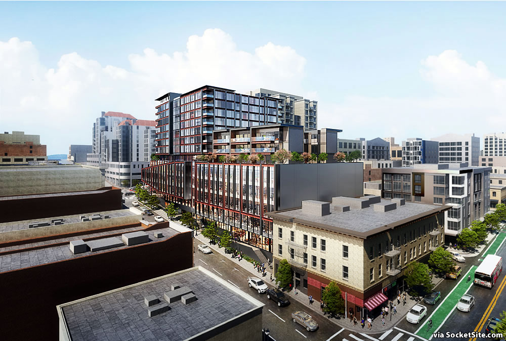
Family Zoning Plan (2025)
- Approved December 12, 2025 (effective January 12, 2026) after a multi-year, equity-centered outreach process.
- Expands housing options in neighborhoods with superior transit, parks, retail, and services so more families can live near opportunity.
- Key goals include reversing segregation, adding new neighbors and resources, coordinating growth with infrastructure, and delivering more affordable, diverse housing types.
Source: San Francisco Family Zoning Plan (sfplanning.org)
Van Ness Avenue Area Plan
- Objective 1 calls for adding a “significant increment of new housing” along Van Ness because it is already a central, transit-served boulevard.
- Policy 1.1 encourages high-density housing above commercial podiums, while Policy 1.3 lets density be set by building volume instead of strict lot-area math.
- Policy 5.1 directs height controls that frame the wide avenue and support its role as a mixed-use, transit corridor; Policy 5.5 favors full-lot development to maximize units.
Source: San Francisco General Plan — Van Ness Avenue Area Plan (sfplanning.org)
Takeaway: The corridor already has policy support for replacing auto-oriented parcels with dense housing, provided projects deliver active ground floors, respect the streetwall, and coordinate with transit and streetscape upgrades. 950 Van Ness sits squarely inside the geography the city wants to see transition into a residential boulevard.
Risks / watchpoints
- Immediate tract income is below the citywide average, so rent and product assumptions should emphasize value relative to core San Francisco benchmarks.
- Perception issues along the Civic Center / Tenderloin edge persist; plan for enhanced onsite management, activation, and communications to keep the corridor experience aligned with Van Ness investments.
- Submarket vacancy and rent levels still trail the broader metro despite progress—phase underwriting to reflect conservative lease-up and rent-growth curves.
- Only eight transactions (~$40M) closed in the past 12 months, so valuation support and financing comps are thinner than in top-tier institutional submarkets.
- Confirm parcel data, RC-4 controls, height/bulk allowances, and tenant occupancy timelines directly with Planning and the owner before locking a development program. Understanding current occupancy is essential to coordinate development timeline and avoid conflicts.
Demographic snapshot
The property geocodes to Census Tract 122.02 in San Francisco County. The tract data points to a mature, urban, renter-heavy population with incomes below the citywide average, but still with a meaningful college-educated resident base and a dense apartment market.
| Metric | Civic Center / Tenderloin | San Francisco city | Takeaway |
|---|---|---|---|
| Total population | 3,017 | 836,321 | Dense urban neighborhood context |
| Median age | 46.2 | 39.7 | Area skews more mature than city overall |
| Median household income | $54,650 | $141,446 | Mixed-income / workforce-oriented immediate context |
| Total housing units | 1,702 | 411,542 | Strong multifamily context |
| Owner-occupied units | 178 | 139,610 | Low ownership in immediate tract |
| Renter-occupied units | 1,310 | 223,040 | Strong renter profile, supportive for rental product |
| 25+ with bachelor’s degree | 630 | 234,704 | Educated urban resident base |
| 25+ with bachelor’s+ degree | 892 | 402,351 | Meaningful educational attainment locally |
The immediate tract is not one of San Francisco’s highest-income pockets. Even so, it already supports dense residential living. A well-executed project could draw a stronger renter or buyer profile by leaning into location, transit access, healthcare adjacency, and newer product quality.
Civic Center / Tenderloin multifamily submarket

The CoStar submarket report confirms that the location story is not just about neighborhood amenities. The surrounding multifamily market itself has been improving. Civic Center / Tenderloin entered 2026 with tighter vacancy, rising rents, and no recent new deliveries, which has helped existing product regain pricing power.
| Metric | Submarket | San Francisco market | Read-through for 950 Van Ness |
|---|---|---|---|
| Inventory units | 11,184 | 190,858 | Established multifamily base |
| Vacancy rate | 5.5% | 4.3% | Still above metro, but moving in the right direction |
| Vacant units | 610 | 8.1K | Leasing risk exists, but availability has improved |
| Asking rent / unit | $2,591 | $3,435 | Discount supports affordability-oriented demand |
| Effective rent / unit | $2,575 | $3,414 | Minimal gap suggests concessions are manageable |
| Concession rate | 0.6% | 0.6% | In line with broader market |
| Under construction units | 0 | 2,939 | No active competing supply in the submarket |
| 12-mo delivered units | 0 | 1,584 | Existing assets benefit from limited competition |
| Market sale price / unit | $370K | $537K | Lower basis than metro may appeal to value-oriented buyers |
| Market cap rate | 4.8% | 4.5% | Slightly higher yield than the metro overall |
| 12-mo sales volume | $33.3M | $2.7B | Liquidity exists, though thinner locally |
| 12-mo transactions | 8 | 425 | Limited depth, but not a frozen market |
CoStar also notes roughly 11,000 market-rate units and about 4,000 affordable units in the submarket, with no new deliveries or construction starts over the last year. That supply pause matters. It gives existing and future projects more room to lease without competing against a wave of brand-new inventory.
Broader San Francisco multifamily market
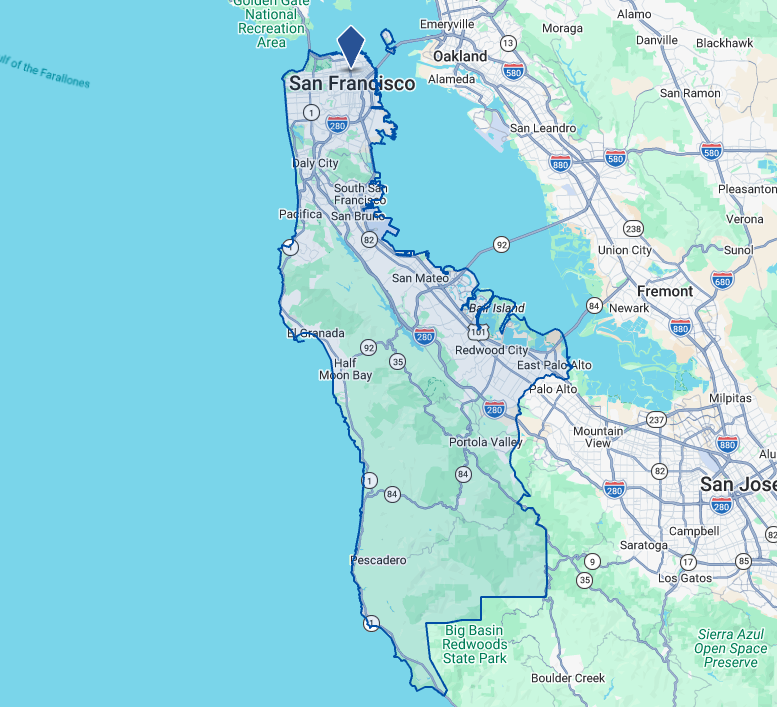
The citywide CoStar report makes the local story more compelling. San Francisco’s multifamily market entered 2026 with strong fundamentals: vacancy has fallen to 4.3%, asking rents have reached roughly $3,435 per unit, annual rent growth is running well ahead of many major U.S. markets, and supply remains constrained relative to demand.
| Metric | San Francisco | National | Why it matters |
|---|---|---|---|
| Vacancy rate | 4.3% | 8.6% | San Francisco is materially tighter than the national average |
| Asking rent / unit | $3,435 | $1,770 | Major premium to the national market |
| Effective rent / unit | $3,414 | $1,749 | Limited discounting |
| Concession rate | 0.6% | 1.2% | Lower concessions than national norms |
| Market sale price / unit | $537K | $233K | Investors still price SF multifamily at a major premium |
| Market cap rate | 4.5% | 6.1% | Lower cap rates reflect stronger long-term expectations |
| Median household income | $154,217 | $84,512 | High income base supports premium rents |
| 12-mo absorption units | 3,045 | 395,305 | Demand is still positive despite cost |
| Under construction units | 2,939 | 551,407 | Construction exists but remains historically subdued for SF |
CoStar’s citywide narrative highlights several themes that help position 950 Van Ness: downtown-oriented neighborhoods are recovering, return-to-office activity improves daily relevance for central locations, and hiring tied to tech and AI has brought higher-income renters back into the market. At the same time, high construction costs, complex entitlements, and financing constraints keep supply muted.
For 950 Van Ness, the takeaway is simple: the property sits in a submarket that is improving, inside a metro that is already outperforming the national apartment market on vacancy, rents, concessions, and pricing.
Target demand profile

- Young professionals who want central access without depending on a car
- Medical professionals and healthcare staff given proximity to CPMC and related medical offices
- Graduate students / faculty / education-adjacent residents tied to nearby institutions and city access
- Urban empty nesters / downsizers who value convenience, culture, and healthcare access
- International and domestic renters who prioritize a recognizable, central San Francisco address with transit and services
- Lifestyle-driven residents who want quick access to dining, arts, shopping, and multiple neighborhoods
- Affordability-conscious renters who want a central location at rents below the broader San Francisco average
Amenities & distances
Schools / education
- Elementary: Tenderloin Community School (0.17 mi), Redding Elementary School (0.38 mi)
- Middle: DeMarillac Academy (0.44 mi)
- High school: Sacred Heart Cathedral Preparatory (0.15 mi), Stuart Hall High School (0.47 mi)
- College: Academy of Art University programs nearby
Healthcare
- CPMC Van Ness Campus (0.15 mi)
- Opera Plaza / nearby medical-office concentration (0.17 mi)
- Civic Center area (0.46 mi)
Places of worship
- Saint Mark’s Lutheran Church (0.12 mi)
- First Unitarian Universalist Church (0.16 mi)
- Hamilton Square Baptist Church (0.62 mi)
- Trinity Episcopal Church (0.35 mi)
- Saint Gregory of Nyssa Episcopal Church (1.78 mi)
- Al Tawheed Mosque (0.33 mi)
Retail / grocery
- Whole Foods Market (0.44 mi)
- Trader Joe’s (0.48 mi)
- Nijiya Market / Japan Center area (0.54 mi)
- Opera Plaza (0.17 mi)
- Polk Street corridor (approx. 0.3–0.5 mi)
- Powell Street BART (0.71 mi)
Residential precedent & investor positioning
The strongest argument for residential redevelopment is simple: this corridor already works as a residential address. Investors are not being asked to create demand from scratch. They are stepping into a location where the residential case has already been validated by surrounding product, public investment, and ongoing neighborhood evolution.
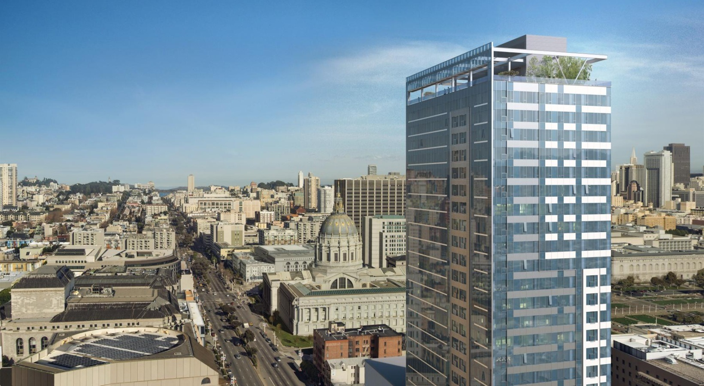
A widely cited adaptive-reuse success story that converted a former office tower into apartments.
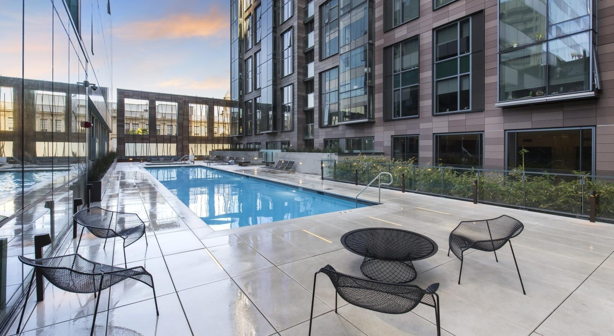
Contemporary multifamily product reinforcing the corridor’s appeal as a residential address.
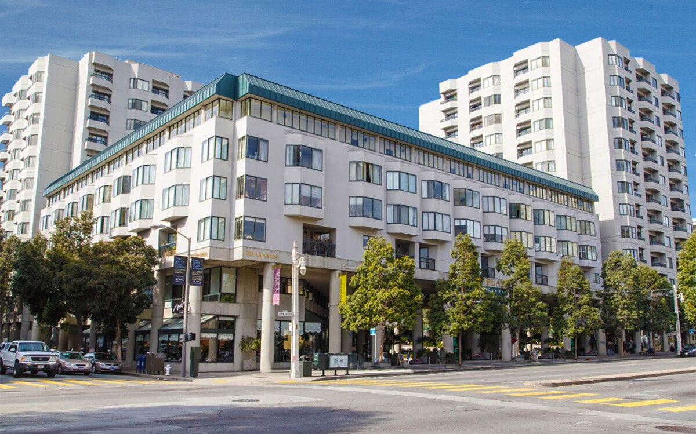
Longstanding mixed-use and residential presence that supports the district’s established housing identity.
- 100 Van Ness shows the market’s acceptance of residential conversion and repositioning in this broader corridor.
- 150 Van Ness confirms current multifamily demand for well-located Van Ness product.
- Opera Plaza demonstrates that the area has supported residential, retail, and cultural activity for decades.
Van Ness has long been wide, prominent, and in places overly car-oriented, but city policy and public investment have been pushing the corridor in a different direction: safer streets, better transit, a stronger mixed-use identity, and a more housing-friendly pattern of development.
- The San Francisco General Plan frames Van Ness as a major mixed-use boulevard and transit corridor.
- Public investment along the corridor signals long-term institutional support.
- Nearby adaptive-reuse and apartment projects show that private capital has already validated the residential thesis.
- Legacy automotive uses increasingly feel underutilized relative to the corridor’s centrality and infrastructure.
Hold / Reposition / Redevelop Framework
1) Hold As-Is — Current Use Value
Important caveat: The auto/showroom/parking use is a specialty market with a narrow audience in real estate. The potential tenant list is limited — primarily car dealerships, auto service centers, car storage facilities, and parking operators. This constraint should be factored into any hold strategy.
The corridor still supports vehicle-oriented uses, but these uses increasingly sit on land with much higher residential and mixed-use potential. As-is value should be framed off achievable lease income, but realistic rent assumptions are essential given the specialized tenant base.
- Key question: What can the property lease for today as a showroom, service center, or parking facility?
- For additional reference: 999 Van Ness (auto-oriented commercial on Van Ness) sold for $39.75M in 2019 ($485/SF, 82,017 SF total).
2) Reposition Without Full Redevelopment
Before committing to a full entitlement and construction cycle, consider whether interior upgrades, cleaner merchandising, or rooftop parking can materially raise rent without the cost and timeline of full redevelopment.
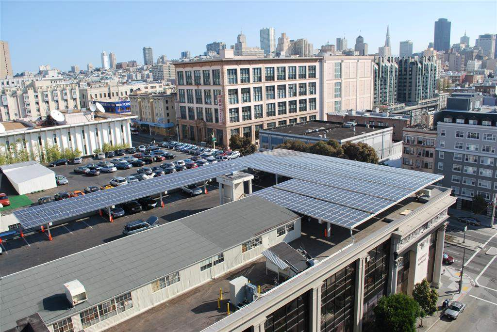
- Rooftop parking potential: Should be analyzed for structural capacity, zoning compliance, and access feasibility.
- Interior renovation scope: Modern showroom standards, improved lighting, updated HVAC, and better merchandising flow.
- Target outcome: Capture higher market rents for auto/service use without the capital intensity of residential conversion.
- For additional reference: 999 Van Ness combines parking with showroom/flex/retail uses across 82,017 SF.
3) Redevelop — Residential Pathway
Redevelopment value remains the upside case because nearby policy and precedent continue to favor residential density over low-intensity auto use.
- Emerald Fund has delivered 1,000+ units within 0.5 miles (100 Van Ness, 150 Van Ness, 101 Polk).
- Unit economics: See detailed table below for rent ranges by unit type.
- Zoning alignment: RC-4 zoning anticipates high-density residential with ground-floor commercial.
- Policy support: Family Zoning Plan (2025) and Van Ness Avenue Area Plan both encourage residential replacement of auto-oriented uses.
Transaction History — Comparable Auto/Commercial Sales
| Property | Transaction Date | Purchase Price | Building SF | Lot Size (AC) | Stories / Height | Use |
|---|---|---|---|---|---|---|
| 950 Van Ness — Subject Property | Oct 2009 | $8.45M ($192.05/SF) | 44,000 SF | 0.37 AC | 2 stories | Auto dealership (current) |
| 999 Van Ness | Aug 2019 | $39.75M ($485/SF) | 82,017 SF | 0.68 AC | 5 stories | Tesla showroom + parking |
| 901 Van Ness | Dec 2021 | $36.5M ($417/SF) | 87,628 SF | 0.68 AC | 3 stories, 18' ceiling | Land Rover dealership |
| 1200 Van Ness | Not available | Not available | 122,017 SF (current) | 0.87 AC | 4 stories (current) | Office building / Proposed 107-unit residential |
Note: 950 Van Ness data from CoStar property report. 1200 Van Ness current use is 4-story office building. Proposed development: 13-story, 107-unit mixed-use residential (construction 2027–2030).
Current-Use Market Conditions (Auto/Commercial) — 950 Van Ness Ave Data
The following data comes from the CoStar report for 950 Van Ness Ave. This reflects current auto-oriented commercial market conditions for the subject property.
| Metric | 950 Van Ness | Submarket (2-4 Star) |
Market Overall (SF) |
Read-through |
|---|---|---|---|---|
| Vacancy Rate | 0.0% | 4.3% (▼ 1.3%) | 5.5% (▼ 0.3%) | Subject property area fully leased; submarket tightening |
| Asking Rent / SF | $38.52 | $39.46 (▼ 2.0%) | $42.99 (▼ 1.8%) | Rent stability at ~$38-40/SF for auto/showroom use |
| 12 Mo. Leased | 93,772 SF (12.6% of inventory) | Active leasing in submarket | ||
| Months on Market | 17.4 months (+3.2 mo YOY) | Longer lease-up timeline for commercial | ||
| 12 Mo. Sales Volume | $40.31M (vs $11.36M prior year) | Strong investor interest in corridor | ||
| Market Sale Price / SF | $459/SF (vs $472/SF prior year) | Values holding steady | ||
Source: CoStar Property Report for 950 Van Ness Ave, March 2026.
Residential Unit Economics — Proven Rents from Comps
| Property | Unit Type | Count | Avg SF | Min Rent | Max Rent | $/SF |
|---|---|---|---|---|---|---|
| 100 Van Ness | Studio | 46 | 452 SF | $3,598 | $3,598 | $7.97 |
| 1BR | 223 | 706 SF | $4,444 | $4,444 | $6.29 | |
| 2BR | 149 | 1,061 SF | $6,337 | $6,337 | $5.97 | |
| 150 Van Ness | 1BR | 147 | 651 SF | ~$4,100 | ~$4,800 | $6.30–$7.37 |
| 2BR | 150 | 953 SF | ~$5,700 | ~$6,600 | $5.98–$6.93 | |
| 3BR | 120 | 1,132 SF | ~$6,800 | ~$7,800 | $6.01–$6.89 | |
| Range: $5.97–$7.97/SF | Avg unit size: 770–804 SF | ||||||
All value conclusions require independent due diligence. This report provides reference points only.
Neighboring Projects — Detailed Comparables
Completed Projects ●
100 Van Ness — New Construction
- Address: 100 Van Ness Ave, San Francisco, CA 94102
- Distance from 950 Van Ness: 0.52 miles
- Before: Former California Automobile Association office building (1970s office tower, nearly vacant, demolished)
- After: 418-unit luxury rental apartment tower (Class A residential)
- Building size: 340,434 SF GBA, 28 stories, ~400 feet
- Lot size: 20,038 SF (0.46 acres)
- Zoning: C-3-G (prior building); C-3-G (new project)
- Prior building sale: $58,380,377 ($156.92/SF) in Jan 2008 — Part of portfolio sale
- Construction: Jun 2013–2015 (~2 years)
- Developer: Emerald Fund, Inc.
- 2025 assessed value: $242,118,907 (Land: $34,527,762; Improvements: $207,186,020)
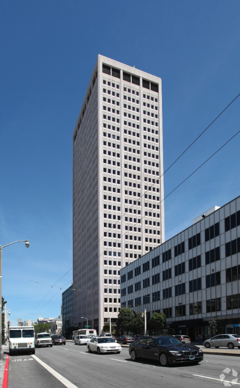
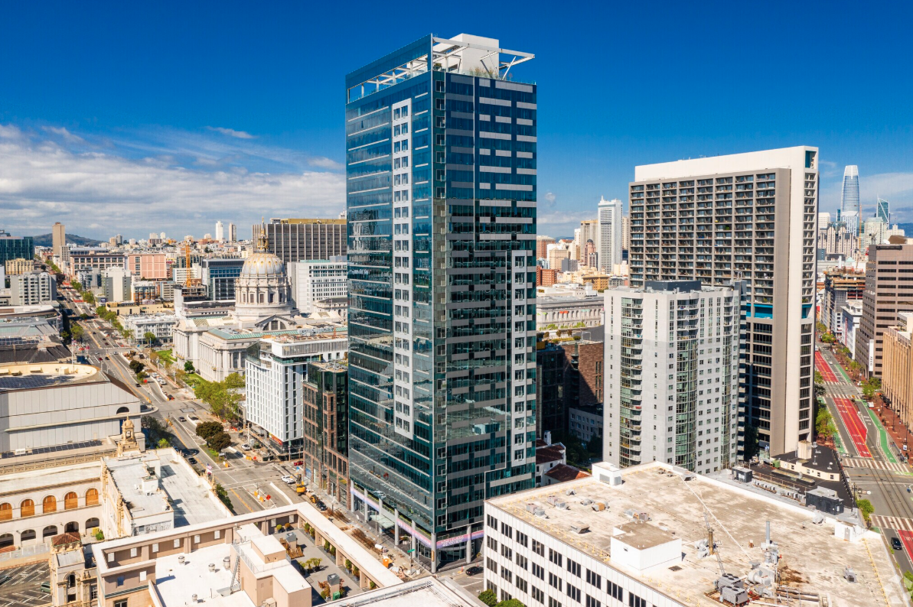
150 Van Ness — New Construction
- Address: 150 Van Ness Ave, San Francisco, CA 94102
- Distance from 950 Van Ness: 0.48 miles
- Before: 2-Star office building (demolished)
- After: 420-unit apartment project with retail/mixed-use
- Building size: 336,644 SF GBA, 13 stories
- Lot size: 449,975 SF (10.33 acres)
- Zoning: C-3-G (prior building); C-3-G (new project)
- Prior building sale: $35,269,920 ($235.50/SF) in Jan 2008 — Part of portfolio sale
- Construction: Feb 2017–2018 (~1.5 years)
- Developer: Emerald Fund, Inc.
- 2025 assessed value: $244,997,876 (Land: $26,151,036; Improvements: $214,858,134)
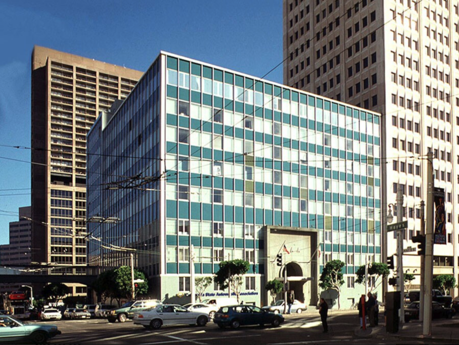

101-103 Polk St — The Civic
- Address: 101-103 Polk St, San Francisco, CA 94102
- Distance from 950 Van Ness: 0.30 miles
- Before: 2-Star surface parking lot
- After: 162-unit mid-rise apartments (market + affordable)
- Building size: 118,761 SF GBA, 13 stories
- Lot size: 13,068 SF (0.30 acres)
- Zoning: C-3-G (prior building); C-3-G (new project)
- Prior building sale: $7,200,000 ($494.40/SF) in Jan 2014
- Construction: Oct 2014–Dec 2015 (~1.5 years)
- Developer: Emerald Fund, Inc.
- 2025 assessed value: $99,954,518 (Land: $21,072,586; Improvements: $78,621,409)
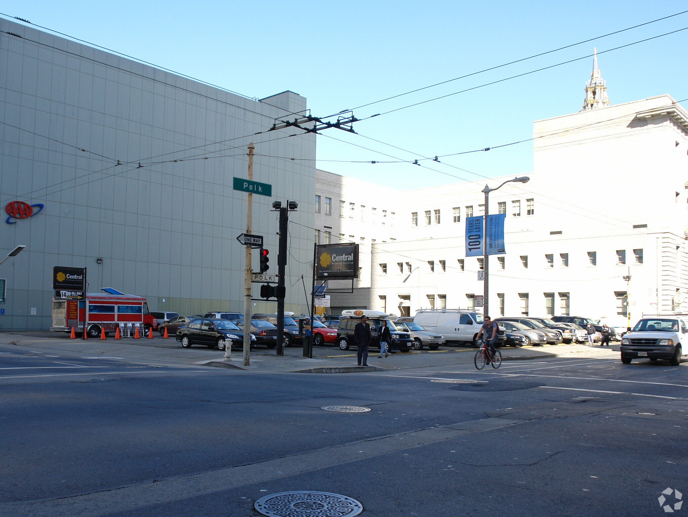
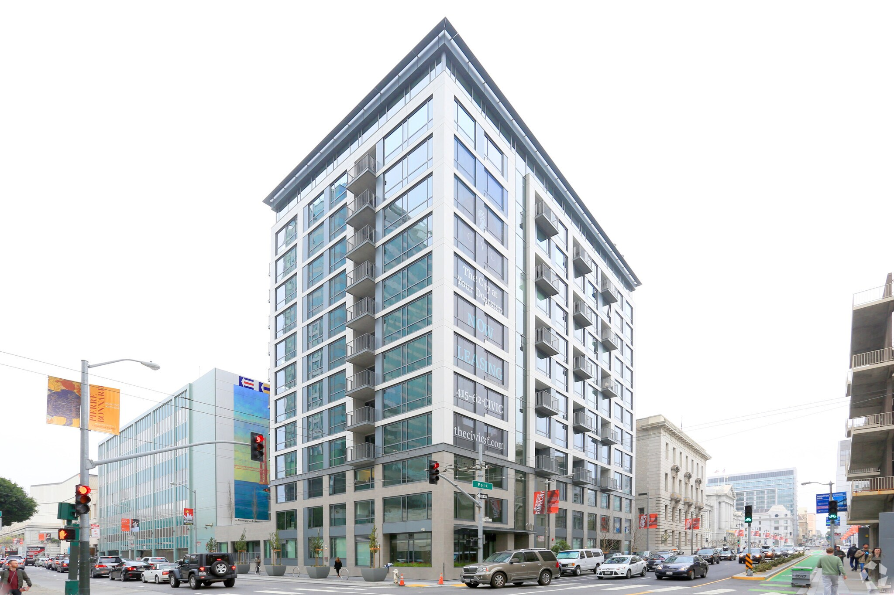
719 Larkin St — New Condo Construction
- Address: 719 Larkin St, San Francisco, CA 94109
- Distance from 950 Van Ness: 0.35 miles
- Before: 2-Star freestanding retail building (5,400 SF)
- After: 42-unit condominium building with ground-floor retail
- Building size: 43,200 SF GBA, 8 stories
- Lot size: 6,072 SF (0.14 acres)
- Zoning: RC-4 (prior building); RC-4 (new project)
- Prior building sale: $3,000,000 ($555.56/SF) in Dec 2015
- Project duration: Construction Feb 2018–Jul 2019 (~1.5 years)
- Completed: 2019
- Developer: JS Sullivan Development
- 2025 assessed value: $195,684 (Land: $31,639; Improvements: $164,045)
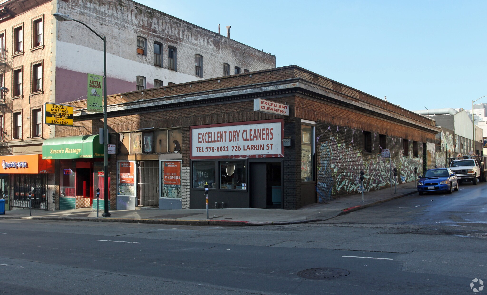

55 Oak St — The Oak SF
- Address: 55 Oak St, San Francisco, CA 94102
- Distance from 950 Van Ness: 0.25 miles
- Before: 2-story industrial/service building (10,679 SF, built 1900)
- After: 109-unit luxury rental apartments with ground-floor retail
- Building size: 146,578 SF GBA, 12 stories, 120' height
- Lot size: 12,563 SF (0.29 acres)
- Zoning: C-3-G
- Prior building sale: $3,448,582 ($322.93/SF) in May 2015
- Construction: Apr 2019–Nov 2022 (~3.5 years)
- Developer: Z & L Properties
- Architect: Handel Architects
- 2025 assessed value: $70,380,000 (Land: $42,228,000; Improvements: $28,152,000)
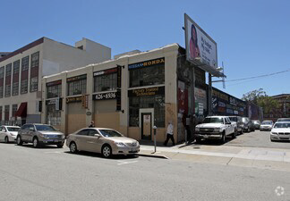
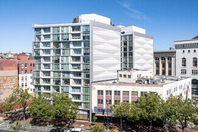
830 Eddy St — Vance
- Address: 830 Eddy St, San Francisco, CA 94109
- Distance from 950 Van Ness: 0.30 miles
- Before: 2-story parking garage (28,800 SF, built 1900, demolished 2019)
- After: 137-unit apartment building with ground-floor retail
- Building size: 130,000 SF GBA, 12 stories
- Lot size: 13,225 SF (0.30 acres)
- Zoning: RC-4
- Prior building sale: $3,950,000 ($164.58/SF) in Jun 2015
- Latest sale: $43,300,000 ($316,058/unit) in Sep 2025
- Construction: May 2020–Nov 2021 (~1.5 years)
- Developer: BUILD / JB Housing Ventures
- Architect: BAR Architects
- 2025 assessed value: $72,725,036 (Land: $8,474,633; Improvements: $64,096,963)
not available
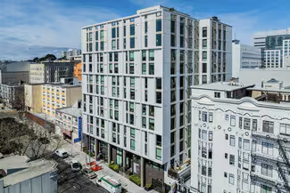
818 Van Ness Ave — The Artani
- Address: 818 Van Ness Ave, San Francisco, CA 94109
- Distance from 950 Van Ness: 0.08 miles
- Before: 810-826 Van Ness Ave — Single-story storefront retail building (13,400 SF, Class B, demolished 2004)
- After: 52-unit condominium building with ground-floor retail
- Building size: 106,712 SF GBA, 9 stories
- Lot size: 9,904 SF (0.23 acres)
- Zoning: RC-4
- Prior building sale: $2,000,000 ($149.25/SF) in Jun 2004
- Construction: Completed 2009
- Developer: Not Available
- Architect: Forum Design
- 2025 assessed value: $4,945,395 (Land: $2,437,365; Improvements: $2,508,030)


1001 Van Ness Ave — Coterie Cathedral Hill
- Address: 1001 Van Ness Ave, San Francisco, CA 94109
- Distance from 950 Van Ness: 0.35 miles
- Before: Not Available
- After: Assisted living community with ground-floor retail (LEED Silver)
- Building size: 234,259 SF GBA, 13 stories, 130' height
- Lot size: 31,172 SF (0.72 acres)
- Zoning: RC-4
- Prior building sale: Not Available
- Construction: Apr 2020–Mar 2022 (~2 years)
- Developer: Oryx Partners / Related California
- Architect: Handel Architects
- 2025 assessed value: $252,671,836 (Land: $45,736,277; Improvements: $206,935,559)
not available

1545 Pine St — The Austin
- Address: 1545 Pine St, San Francisco, CA 94109
- Distance from 950 Van Ness: 0.40 miles
- Before: Industrial/service building (5,277 SF, built 1906, demolished Jan 2016)
- After: 103-unit condominium building with ground-floor retail
- Building size: 143,882 SF GBA, 12 stories
- Lot size: 14,489 SF (0.33 acres)
- Zoning: RC-4
- Prior building sale: Not Available
- Construction: May 2016–Dec 2017 (~1.5 years)
- Developer: Pacific Eagle (US) Real Estate Fund
- Architect: BDE Architecture
- 2025 assessed value: $19,764,687 (Land: $11,457,755; Improvements: $8,306,932)


1630-1690 Pine St — Rockwell
- Address: 1630-1690 Pine St, San Francisco, CA 94109
- Distance from 950 Van Ness: 0.50 miles
- Before: Five separate properties assembled into one development site:
- 1634 Pine St — Midas Auto Repair (8,893 SF, built 1912, demolished 2015)
- 1650 Pine St — Office (3,255 SF, built 1917)
- 1656 Pine St — Office (3,018 SF, built 1917)
- 1660 Pine St — Office (13,152 SF, built 1917)
- 1670 Pine St — Office (11,256 SF, built 1917, demolished Mar 2017)
- After: 260-unit condominium complex (two 13-story towers) with ground-floor retail
- Building size: 286,468 SF GBA, 13 stories (two towers)
- Lot size: 35,423 SF (0.81 acres)
- Zoning: NC-3
- Prior building sale: Portfolio sale $6,577,773 total ($135.05/SF avg) in Nov 2011 — 1634 Pine Street, LLC
- Construction: Nov 2014–Aug 2016 (~2 years)
- Developer: Not Available
- Architect: Kwan Henmi Architecture & Planning
- 2025 assessed value: $36,845,538 (Land: $19,517,538; Improvements: $17,328,000)


1788 Clay St — Marlow
- Address: 1788 Clay St, San Francisco, CA 94109
- Distance from 950 Van Ness: 0.55 miles
- Before: Not Available
- After: 98-unit condominium building with ground-floor retail
- Building size: 102,890 SF GBA, 7 stories
- Lot size: 45,646 SF (1.05 acres)
- Zoning: RC-4
- Prior building sale: Not Available
- Construction: Completed Mar 2014
- Developer: Oyster Development Corp
- Architect: Not Available
- 2025 assessed value: $12,034,519 (Land: $7,046,671; Improvements: $4,987,848)
not available

2525 Van Ness Ave — The Belvedere
- Address: 2525 Van Ness Ave, San Francisco, CA 94109
- Distance from 950 Van Ness: 1.0 miles
- Before: 2-story office building with retail (9,980 SF, built 1942, demolished Dec 2020)
- After: 28-unit condominium building with ground-floor retail
- Building size: 51,695 SF GBA, 7 stories
- Lot size: 10,890 SF (0.25 acres)
- Zoning: RC-3
- Prior building sale: $8,000,000 ($801.60/SF) in Jan 2020
- Construction: Sep 2022–Feb 2024 (~1.5 years)
- Developer: March Capital Management
- Architect: Not Available
- 2025 assessed value: $68,513,696 (Land: $26,171,276; Improvements: $42,342,420)


Proposed / In-Development Projects ●
30 Van Ness — High-Rise (Lendlease)
- Address: 30 Van Ness Ave, San Francisco, CA 94102
- Distance from 950 Van Ness: 0.59 miles
- Before: 3-Star Herbst Building office (Class C, 180,363 SF, 5 stories, built 1908/renovated 1964)
- Zoning: C-3-G (prior building); no info available (new project)
- Prior building sale: $70,000,000 ($388/SF) in May 2017
- Demolished: January 2022
- Proposed: 47-story mixed-use tower (540 feet)
- Building size: 600,000 SF GBA
- Units: 333 units (market-rate)
- Lot size: 0.88 AC (38,124 SF)
- Projected duration: 2026–2028 (estimated)
- Developer: Lendlease Corporation (with Carmel Partners)
- Status: Proposed/entitled; foundation work started
- 2025 assessed value: $102,178,970 (Land: $77,178,970; Improvements: $25,000,000)


724-730 Van Ness — Two-Tower
- Address: 724-730 Van Ness Ave, San Francisco, CA 94102
- Distance from 950 Van Ness: 0.15 miles
- Before: 7,100 SF single-story retail (demolished Aug 2004)
- Zoning: RC-4 (prior building); no info available (new project)
- Prior building sale: $7,100,000 ($1,000/SF) in July 2004
- Proposed: Two-tower complex, 104 units multifamily with retail
- Lot size: 0.36 AC (15,544 SF)
- Developer: West Bay Builders (The Thompson Group)
- Status: Proposed
- 2025 assessed value: Not available (proposed project)


1200 Van Ness — Mixed-Use Residential (Proposed)
- Address: 1200 Van Ness Ave, San Francisco, CA 94109
- Distance from 950 Van Ness: 0.20 miles
- Before: 4-story office building (122,017 SF, built 1911/renovated 1999, Class B, masonry)
- Current use: Office with ground-floor retail (24 Hour Fitness, SimonMed). 68.5% leased, $24/SF NNN.
- Zoning: RC-4 (prior building); RC-4 (new project)
- Prior building sale: Not available
- Proposed: 13-story mixed-use (267,000 SF GBA, 130' height)
- Residential: 107 units (8 stories above podium)
- Retail/Commercial: Grocery, medical offices (Levels 2–5)
- Parking: 357 spaces (5 below-grade levels)
- Lot size: 0.68 AC (29,621 SF)
- Developer: Van Ness Post Center LLC (Derrick Chang)
- Architect: Woods Bagot
- Timeline: Construction Dec 2027–Dec 2030
- Status: Proposed/entitled
- 2025 assessed value: $17,564,591 (Land: $4,790,335; Improvements: $12,774,256)

not yet available
819 Ellis St — Group Housing
- Address: 819 Ellis St, San Francisco, CA 94109
- Distance from 950 Van Ness: 0.40 miles
- Before: 4-story parking garage/flex building (28,800 SF, built 1906)
- Zoning: NC-3-130E (prior building); no info available (new project)
- Prior building sale: $2,100,000 ($72.92/SF) in March 2003
- Proposed: New residential group housing, 138 bedrooms + 1,085 SF retail
- Building size: 28,800 SF (existing), 4 stories
- Lot size: 7,196 SF (0.17 acres)
- Developer: Forge Development Partners
- Status: Proposed — using CA State Density Bonus Law
- 2025 assessed value: $8,058,000 (Land: $4,834,800; Improvements: $3,223,200)


Summary Comparison Table
Latest transaction price and date to be confirmed independently.
| Property | Previous Sale | Price/SF (based on prior building previous sale) | Latest Sale | Building SF | Lot (AC) | Units | Construction |
|---|---|---|---|---|---|---|---|
| 100 Van Ness — Completed | Jan 2008: $58.38M | $156.92 | Not available | 340,434 SF | 0.46 | 418 | Jun 2013–2015 |
| 150 Van Ness — Completed | Jan 2008: $35.27M | $235.50 | Not available | 336,644 SF | 10.33 | 420 | Feb 2017–2018 |
| 101-103 Polk — Completed | Jan 2014: $7.2M | $494.40 | Not available | 118,761 SF | 0.30 | 162 | Oct 2014–Dec 2015 |
| 719 Larkin — Completed | Dec 2015: $3M | $555.56 | Not available | 43,200 SF | 0.14 | 42 | Feb 2018–Jul 2019 |
| 55 Oak St — Completed | May 2015: $3.45M | $322.93 | Not available | 146,578 SF | 0.29 | 109 | Apr 2019–Nov 2022 |
| 830 Eddy St — Completed | Jun 2015: $3.95M | $164.58 | Sep 2025: $43.3M | 130,000 SF | 0.30 | 137 | May 2020–Nov 2021 |
| 818 Van Ness Ave — Completed | Jun 2004: $2M | $149.25 | Not available | 106,712 SF | 0.23 | 52 | Completed 2009 |
| 1001 Van Ness Ave — Completed | Not available | Not available | Not available | 234,259 SF | 0.72 | Not available | Apr 2020–Mar 2022 |
| 1545 Pine St — Completed | Not available | Not available | Not available | 143,882 SF | 0.33 | 103 | May 2016–Dec 2017 |
| 1630-1690 Pine St — Completed | Nov 2011: $6.58M (portfolio) | $135.05 | Not available | 286,468 SF | 0.81 | 260 | Nov 2014–Aug 2016 |
| 1788 Clay St — Completed | Not available | Not available | Not available | 102,890 SF | 1.05 | 98 | Completed Mar 2014 |
| 2525 Van Ness Ave — Completed | Jan 2020: $8M | $801.60 | Not available | 51,695 SF | 0.25 | 28 | Sep 2022–Feb 2024 |
| 30 Van Ness — Construction | May 2017: $70M | $388 | Not available | 600,000 SF | 0.88 | 333 | 2026–2028 (est.) |
| 724-730 Van Ness — Proposed | Jul 2004: $7.1M | $1,000 | Not available | Not available | 0.36 | 104 | TBD |
| 1200 Van Ness — Proposed | Not available | Not available | Not available | 267,000 SF | 0.68 | 107 | 2027–2030 (est.) |
| 819 Ellis — Proposed | Mar 2003: $2.1M | $72.92 | Not available | 28,800 SF | 0.17 | 138 beds | TBD |
| 950 Van Ness — Subject Property | Oct 2009: $8.45M | $192.05 | Not available | 44,000 SF | 0.37 | N/A (auto use) | Current |
Takeaway
Completed projects in the corridor required 1.5–2 years of construction and achieved 162–420 units on sites ranging from 0.14 to 10.33 acres. Office, parking, and retail uses have all been successfully redeveloped in the area. Multiple experienced developers (Emerald Fund, Lendlease, JS Sullivan, Forge) are active in the submarket, which validates the feasibility of redevelopment.
Sale Comparables — Van Ness / Civic Center
Sale Summary
| Condition | Count | Avg List Price | Avg Sale Price | Avg $/SF | Avg HOA |
|---|---|---|---|---|---|
| Modern | 4 | $378,828 | $303,878 | $896.89 | $619 |
| Updated | 4 | $719,975 | $696,411 | $761.55 | $1,381 |
| Dated | 7 | $669,114 | $589,163 | $701.72 | $1,415 |
| Luxury | 1 | $1,095,000 | $1,050,000 | $1,009.62 | $941 |
| Basic | 1 | $288,000 | Not available | $1,129.41 | $530 |
| Fixer-Upper | 1 | $659,000 | Not available | $625.24 | $793 |
| BMR | 2 | $332,256 | $330,256 | $576.25 | $686 |
Sale Comp Map
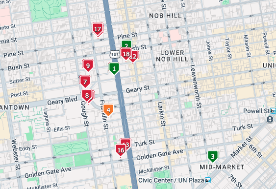
All Sale Comps
Ordered to match the numbering shown on the sale comp map.
| # | Address | Class / Year / Condition | Beds / Baths | SF | HOA | List Price | Sale Price | $/SF | Close Date | DOM |
|---|---|---|---|---|---|---|---|---|---|---|
| 1 | 1 Daniel Burnham Ct #816 | Class B 1987 • Updated | 1 / 1 | 723 | $1,306 | $580,000 | — | $802.21 | — | 240 |
| 2 | 1433 Bush St #405 | Class B 2019 • Modern | 0 / 1 | 383 | $726 | $498,800 | — | $1,302.35 | — | 17 |
| 3 | 83 McAllister St #302 | Class B 1907 / renovated 2006 • Basic | 0 / 1 | 255 | $530 | $288,000 | — | $1,129.41 | — | 5 |
| 4 | 1000 Franklin St #305 Fixer upper condition | Unknown Year unknown • Fixer-Upper | 2 / 2 | 1,054 | $793 | $659,000 | — | $625.24 | — | 267 |
| 5 | 1 Daniel Burnham Ct #1610 | Class B 1987 • Updated | 3 / 2 | 1,598 | $2,692 | $1,198,000 | $1,190,000 | $744.68 | 2/27/26 | 103 |
| 6 | 1688 Pine St #402 | Class A 2016 • Luxury | 2 / 2 | 1,040 | $941 | $1,095,000 | $1,050,000 | $1,009.62 | 12/12/25 | 60 |
| 7 | 1388 Gough St #1001 | Class B 1993 • Updated | 2 / 2 | 1,382 | $2,041 | $1,148,000 | $1,050,000 | $759.77 | 12/23/25 | 200 |
| 8 | 1200 Gough St #10A | Class B 1966 • Luxury but dated | 2 / 2 | 1,500 | $1,592 | $999,900 | $980,000 | $653.33 | 12/9/25 | 114 |
| 9 | 1483 Sutter St #301 | Class B 1993 • Dated | 1 / 1 | 801 | $941 | $710,000 | $690,000 | $861.42 | 12/8/25 | 113 |
| 10 | 1200 Gough St #14D | Class B 1966 • Dated | 1 / 1 | 900 | $1,094 | $699,000 | $683,500 | $759.44 | 12/22/25 | 68 |
| 11 | 601 Van Ness Ave #67 | Class B 1981 • Dated | 2 / 2 | 977 | $1,550 | $649,000 | $625,000 | $639.71 | 1/29/26 | 129 |
| 12 | 1201 Sutter St PH605 | Unknown 2022 • Modern | 1 / 1 | — | $378 | $555,000 | $555,000 | — | 1/9/26 | 86 |
| 13 | 601 Van Ness Ave #1102 | Class B 1981 • Dated | 1 / 1 | 676 | $1,222 | $498,000 | $465,000 | $687.87 | 1/2/26 | 186 |
| 14 | 601 Van Ness Ave #750 | Class B 1981 • Dated | 1 / 1 | 666 | $1,285 | $479,000 | $450,000 | $675.68 | 2/26/26 | 140 |
| 15 | 601 Van Ness Ave #812 | Class B 1981 • Updated | 1 / 1 | 708 | $1,285 | $499,900 | $445,645 | $629.44 | 2/9/26 | 103 |
| 16 | 601 Van Ness Ave #1047 | Class B 1981 • Dated | 1 / 1 | 621 | $1,103 | $445,000 | $435,000 | $700.48 | 12/1/25 | 102 |
| 17 | 1688 Pine St #101 | Class A 2016 • Modern, BMR | 2 / 2 | 886 | $830 | $335,512 | $335,512 | $378.68 | 12/29/25 | 414 |
| 18 | 1238 Sutter St #303 | Class B 2018 • Modern, BMR | 1 / 1 | 420 | $541 | $329,000 | $325,000 | $773.81 | 3/24/26 | 757 |
Rent Comparables — Civic Center / Tenderloin Submarket
Rent Summary by Unit Type
| Unit Type | SF Range | Lowest Rent | Highest Rent | Average Rent | Lowest $/SF | Highest $/SF | Average $/SF |
|---|---|---|---|---|---|---|---|
| Studio | 221–615 SF | $1,695 | $3,970 | $2,689 | $4.07 | $8.57 | $6.24 |
| 1 Bedroom | 499–1,374 SF | $2,808 | $8,046 | $4,323 | $3.85 | $9.00 | $6.48 |
| 2 Bedroom | 686–1,250 SF | $3,584 | $7,600 | $5,652 | $4.08 | $6.93 | $5.52 |
| 3 Bedroom | 1,059–1,192 SF | $5,700 | $7,400 | $6,550 | $5.38 | $6.99 | $6.18 |
Property Locations Map

Comparable Properties
Class A Properties
950 Van Ness — SUBJECT
950 Van Ness Ave
1919 • 0.37 acres • 2 stories • RC-4 Zoning
Current: Auto dealership • Proposed: Residential redevelopment
Subject property
100 Van Ness ●
100 Van Ness Ave
2014 • 418 units • 28 stories • Class A
1BR: $4,340–$5,072 (641–732 SF | $6.77–$6.93/SF)
2BR: $6,222–$6,872 (994–1,101 SF | $6.26–$6.91/SF)
0.52 miles from subject
150 Van Ness ●
150 Van Ness Ave
2018 • 420 units • 13 stories • Class A
Studio: $2,795–$3,200 (376–463 SF | $6.04–$8.51/SF)
1BR: $3,200–$4,553 (529–789 SF | $5.77–$8.61/SF)
2BR: $4,100–$6,081 (686–1,108 SF | $5.49–$8.86/SF)
3BR: $5,700–$7,400 (1,059–1,192 SF | $5.38–$6.99/SF)
0.48 miles from subject
NEMA
8 10th St
2014 • 754 units • 35 stories • Class A
Studio: $3,533–$3,840 (470–604 SF | $5.85–$8.17/SF)
1BR: $4,530–$4,955 (788–902 SF | $5.02–$6.29/SF)
0.55 miles from subject • SOMA
50 Jones
50 Jones St
2020 • 303 units • 14 stories • Class A
Studio: $2,619–$3,270 (416–491 SF | $5.33–$7.86/SF)
1BR: $2,825–$3,719 (499–556 SF | $5.08–$7.45/SF)
2BR: $3,584–$4,816 (876–1,051 SF | $4.08–$5.50/SF)
0.25 miles from subject
Prism
1028 Market St
2022 • 186 units • 13 stories • Class A
Studio: $2,559–$3,970 (341–506 SF | $7.50–$7.85/SF)
1BR: $3,353–$8,046 (499–894 SF | $6.72–$9.00/SF)
2BR: $3,700–$4,131 (712–777 SF | $5.20–$5.80/SF)
0.45 miles from subject
Argenta
1 Polk St
2008 • 179 units • 21 stories • Class A
1BR: $3,994–$7,065 (609–1,374 SF | $5.14–$6.56/SF)
0.30 miles from subject
Vance ●
830 Eddy St
2021 • 137 units • 12 stories • Class A
Studio: $2,710–$3,321 (461 SF | $5.88–$7.20/SF)
1BR: $5,727 (N/A SF)
2BR: $5,558 (1,237 SF | $4.49/SF)
0.30 miles from subject • Gated parking with EV charging
The Oak SF ●
55 Oak St
2021 • 109 units • 12 stories • Class A
Studio: $2,825 (493 SF | $5.73/SF)
0.25 miles from subject
The Austin ●
1545 Pine St
2017 • 103 units • 12 stories • Class B
1BR: $3,300 (620 SF | $5.32/SF)
0.40 miles from subject • Condominium rentals
Rockwell ●
1630-1690 Pine St
2016 • 260 units • 13 stories (2 towers) • Class A
1BR: 980 SF | 2BR: 1,280 SF (pricing not available)
0.50 miles from subject • Two-tower complex
Marlow ●
1788 Clay St
2014 • 98 units • 7 stories • Class A
1BR: 759 SF | 2BR: 1,250 SF (pricing not available)
0.55 miles from subject • Nob Hill location
The Belvedere ●
2525 Van Ness Ave
2024 • 28 units • 7 stories • Class B
2BR: $7,600 (1,162 SF | $6.54/SF)
1.0 miles from subject • Boutique doorman building
145 Leavenworth St
145 Leavenworth St
2022 • 94 units • 8 stories • Class A
Studio: $1,695 (222–233 SF | $7.27–$7.63/SF)
0.20 miles from subject
Class A Rent Summary
| Unit Type | SF Range | Lowest Rent | Highest Rent | Average $/SF |
|---|---|---|---|---|
| Studio | 222–604 SF | $1,695 | $3,970 | $5.33–$8.57 |
| 1 Bedroom | 499–1,374 SF | $2,825 | $8,046 | $5.02–$9.00 |
| 2 Bedroom | 686–1,250 SF | $3,584 | $7,600 | $4.08–$6.93 |
| 3 Bedroom | 1,059–1,192 SF | $5,700 | $7,400 | $5.38–$6.99 |
Class B Properties
The Artani ●
818 Van Ness Ave
2009 • 52 units • 9 stories • Class B
no current availability
0.08 miles from subject • Condominium rentals
The Civic ●
101-103 Polk St
2015 • 162 units • 14 stories • Class B
Studio: $2,997–$3,373 (453 SF | $6.61–$7.44/SF)
1BR: $3,242–$4,212 (514–696 SF | $5.81–$8.19/SF)
2BR: $4,203–$5,918 (836–1,002 SF | $5.03–$6.90/SF)
0.30 miles from subject
Fox Plaza
1390 Market St
1966 • 445 units • 29 stories • Class B
Studio: $2,999–$3,339 (450 SF | $6.66–$7.42/SF)
1BR: $3,619–$3,629 (672–814 SF | $4.45–$5.40/SF)
0.35 miles from subject
Opera Plaza
601 Van Ness Ave
1981 • 453 units • 13 stories • Class B
1BR: $2,900–$3,500 (672–755 SF | $4.31–$5.21/SF)
0.35 miles from subject • Individual condo rentals
Geary Courtyard
639 Geary St
1990 • 165 units • 13 stories • Class B
Studio: $2,458–$2,478 (460–491 SF | $5.01–$5.39/SF)
1BR: $2,808 (729 SF | $3.85/SF)
0.25 miles from subject
TL Residences
361 Turk St
2022 • 240 units • 8 stories • Class B
Studio: $1,695–$1,895 (221 SF | $7.67–$8.57/SF)
0.15 miles from subject
Warrington Apartments
775 Post St
1913 • 45 units • 6 stories • Class B
Studio: $2,500 (615 SF | $4.07/SF)
0.25 miles from subject • Historic building
Class B Rent Summary
| Unit Type | SF Range | Lowest Rent | Highest Rent | Average $/SF |
|---|---|---|---|---|
| Studio | 221–615 SF | $1,695 | $3,339 | $4.07–$8.57 |
| 1 Bedroom | 514–814 SF | $2,808 | $4,212 | $3.84–$8.19 |
| 2 Bedroom | 836–1,162 SF | $4,203 | $7,600 | $4.20–$7.08 |
Class C Properties
Tower 737
737 Post St
1988 • 248 units • 17 stories • Class C
Studio: $2,264–$2,819 (326 SF | $6.94–$8.65/SF)
1BR: $3,170–$3,910 (486 SF | $6.52–$8.05/SF)
2BR: $3,859–$3,944 (710 SF | $5.44–$5.55/SF)
0.20 miles from subject • Furnished units available
The Cornelia Suites
641 O'Farrell St
1907 • 97 units • 7 stories • Class C
Studio: $2,195–$2,395 (350 SF | $6.27–$6.84/SF)
0.15 miles from subject • Historic Edwardian building
Class C Rent Summary
| Unit Type | SF Range | Lowest Rent | Highest Rent | Average $/SF |
|---|---|---|---|---|
| Studio | 326–350 SF | $2,195 | $2,819 | $6.27–$8.65 |
| 1 Bedroom | 486 SF | $3,170 | $3,910 | $6.52–$8.05 |
| 2 Bedroom | 710 SF | $3,859 | $3,944 | $5.44–$5.55 |
Alternative Housing Models
FOUND Study
16 Turk St
2019 • 72 units • 12 stories • Student Housing
Per person: $850–$1,800 (215–240 SF | $3.54–$8.37/SF)
All utilities included
0.25 miles from subject • Student housing only
SF House
229 Ellis St
2021 • 55 units • 6 stories • Co-Living
Per room: $1,312–$1,750 (89–125 SF | $10.50–$19.66/SF)
2BR: $2,400–$2,700 (389 SF | $6.17–$6.94/SF)
0.20 miles from subject • Co-living community
Data Collection Notes
- Data collected: March 26, 2026
- Sources: Apartments.com, Zumper.com, ApartmentFinder.com
- All rents are base rents excluding utilities and optional fees unless noted
- Student housing (FOUND Study) and co-living (SF House) priced per person
- Price per square foot calculated from median rent and median SF for each unit type
Methodology & sources
This interactive page is based on the final research document and reorganized for easier navigation and presentation.
- Client-provided Offering Memorandum (OM) for 950 Van Ness Ave
- CoStar Civic Center / Tenderloin multifamily submarket report
- CoStar San Francisco multifamily market report
- CoStar property detail reports for neighboring projects (100 Van Ness, 150 Van Ness, 30 Van Ness, 999 Van Ness, 724-730 Van Ness, 101-103 Polk, 819 Ellis, 719 Larkin, 901 Van Ness, 1200 Van Ness)
- U.S. Census Bureau, 2023 ACS 5-Year Profile tables
- San Francisco General Plan: Van Ness Avenue
- SFMTA: Van Ness Bus Rapid Transit materials
- Sutter Health / CPMC Van Ness Campus public information
- OpenStreetMap / Overpass nearby amenity mapping
- Public project and neighborhood references for 100 Van Ness, 150 Van Ness, Opera Plaza, Polk Street, and Japantown / Japan Center
Design note: sections are separated into tabs so the report is easier to review live with a client, share internally, or adapt into a polished presentation later.